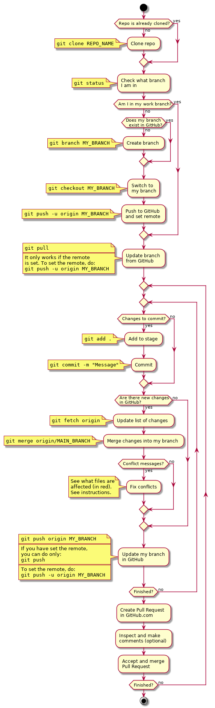

Introducción a GIT
Índice
- 1. Tutorial básico de GIT
-
- 1.0.1. Descarga
- 1.0.2. Ejecución de GIT
- 1.0.3. Configuración inicial
- 1.0.4. Descarga e instalación de Meld (resolución de conflictos)
- 1.0.5. Clonado de un repositorio
- 1.0.6. Actualización de cambios generados en el repositorio
- 1.0.7. Modificación de archivos locales
- 1.0.8. Comprobación del estado
- 1.0.9. Grabación de los cambios (add y commit)
- 1.0.10. Guardado de los cambios en el repositorio remoto (push)
- 1.0.11. Guía completa
-
- 2. Curso de introducción a Git
- 3. Flujo de trabajo GIT para Scrum
- 4. Links
1 Tutorial básico de GIT
1.0.1 Descarga
Puedes descargar el cliente de GIT msysgit de https://github.com/msysgit/msysgit/releases. Debes seleccionar el archivo PortableGIT.
Una vez descargado, descomprímelo a una carpeta y sitúa la carpeta en el directorio raíz del pendrive o disco duro portátil. Nombra esta carpeta como GIT.
1.0.2 Ejecución de GIT
Para ejecutar GIT tienes dos opciones:
- Ejecutarlo simulando un entorno de Linux Bash. Para ello ejecuta
git-bash.bat. - Ejecutarlo en un entorno de consola de Windows. Para ello ejecuta
git-cmd.bat.
Ejecutando cualquiera de las dos opciones se abrirá una consola de comandos. Desde allí se podrá ejecutar el comando git sin necesidad de realizar modificaciones en el sistema.
OJO: si se abre una consola normal del sistema no se podrá ejecutar GIT.
1.0.3 Configuración inicial
Para configurar GIT con nuestro usuario y correo electrónico hay que ejecutar:
# Opciones obligatorias (nombre y correo) git config --global user.name "Nombre y apellido" git config --global user.email CORREO@ELECTRONICO # Editor de preferencia (dejar sólo una línea de las opciones indicadas) git config --global core.editor notepad # Notepad de Windows git config --global core.editor "'C:/Program Files/Notepad++/notepad++.exe' -multiInst -notabbar -nosession -noPlugin" # Notepad ++ git config --global core.editor "'C:/Program Files (x86)/Notepad++/notepad++.exe' -multiInst -notabbar -nosession -noPlugin" # Notepad ++ 32 bit # Herramienta para resolución de conflictos (Meld) git config --global merge.tool "meld" git config --global mergetool.meld.path "'C:/Program Files (x86)/Meld/Meld.exe'" # Almacenamiento de credenciales para no pedir usuario y contraseña de GitHub cada vez que se realice un push # Para que tenga efecto habrá que abrir la consola de Git DESPUÉS de ejecutar estos comandos git config --global credential.helper cache #Para Linux. ¡Elegir sólo una de las dos opciones y eliminar la línea que no se use! git config --global credential.helper wincred #Para Windows. ¡Elegir sólo una de las dos opciones y eliminar la línea que no se use!
1.0.4 Descarga e instalación de Meld (resolución de conflictos)
Meld es un programa para resolver conflictos en archivos al realizar una operación de mezclado o merge. Puedes descargarlo de http://meldmerge.org/ y seleccionar la versión para Windows (en Linux se instala con el gestor de paquetes de la distribución).
Una vez instalado, y habiendo realizado la configuración correspondiente indicada en el paso anterior, se ejecutará al lanzar la opción git mergetool de resolución de conflictos de archivo.
1.0.5 Clonado de un repositorio
Para obtener una copia local de un repositorio remoto hay que ejecutar el comando:
git clone RUTA_AL_REPOSITORIO
La RUTA_AL_REPOSITORIO se obtiene de la página de GitHub del repositorio correspondiente.
1.0.6 Actualización de cambios generados en el repositorio
Si el repositorio original se modifica después de realizar el clonado inicial puede realizarse la actualización ejecutando:
git pull
1.0.7 Modificación de archivos locales
Después de realizar cambios en los archivos es posible visualizarlos mediante el comando:
git diff
1.0.8 Comprobación del estado
Para comprobar el estado del repositorio puede ejecutarse:
git status
1.0.9 Grabación de los cambios (add y commit)
Después de realizar cambios en el repositorio local se deben añadir con el siguiente comando:
git add -A
De esta manera se añadirán los cambios realizados en los archivos y los archivos nuevos que se hayan creado. Es importante incluir el punto en el comando.
Por último, para guardar los cambios se debe ejecutar el comando:
git commit -m "Mensaje informativo"
De esta manera se guardarán los cambios realizados.
1.0.10 Guardado de los cambios en el repositorio remoto (push)
Para actualizar los cambios en el repositorio remoto (GitHub) se debe ejecutar)
git push
De esta manera se guardarán los cambios en el repositorio remoto de GitHub.
1.0.11 Guía completa
Para conocer Git en profundidad puedes consultar el libro publicado en este enlace.
2 Curso de introducción a Git
En el siguiente enlace está disponible un curso básico de introducción a Git: https://try.github.io
3 Flujo de trabajo GIT para Scrum
A continuación se muestra un ejemplo de flujo de trabajo de Git para grupos. Existen muchas otras posibilidades, pero considero que ésta es de las que menos problemas pueden presentar. No obstante, si el equipo de desarrollo considera más adecuado utilizar otro método podrá hacerlo sin ningún problema.
Puedes consultar más información sobre el flujo de trabajo utilizando ramas en este enlace.
Este flujo de trabajo está basado en repositorios compartidos (shared repositories), donde todos los miembros del equipo de desarrollo tienen permisos para realizar cambios (pueden hacer push).
Para evitar la aparición de conflictos, cada usuario realizará sus cambios en una rama distinta. De esta manera los cambios que haga un usuario no afectarán al resto. Una vez finalizado el trabajo, el usuario incorporará los cambios realizados en su rama a la rama principal (merge).
IMPORTANTE. En todos los comandos se considera que la rama de trabajo principal es master. En algunos proyectos la rama principal deberá ser gh-pages para que los cambios se muestren en github.io. Si es el caso, se deberá reemplazar master por gh-pages.
